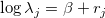
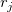
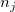
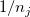
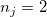
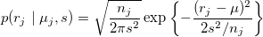
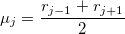
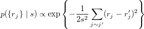

| データ解析のための統計モデリング入門 |
| データ解析のための統計モデリング入門 |
ここまでの場所差は、それぞれ独立に決まると仮定してきた。 しかし、植木鉢のように違いが影響を及ぼさないものではなく、区画を区切ったもののように、隣り合ったものについてはよく似た環境で独立とはいえないような場合はどうすればよいのか？
 場所差の空間相関（spatial correlation）を考慮
場所差の空間相関（spatial correlation）を考慮
空間相関...距離の遠近に依存して、場所の類似性が弱くなったり強くなったりする傾向
50個の調査区画が1本の直線上に等間隔に配置されており、生物の個体数を記録したとする。
調査区画ごとに個体数を並べると、なだらかにへんかしていることがわかる。
なだらかに変化する局所密度を考える。（隣り合う区画はよく似ている。）
区画  における個体数を
における個体数を
|  | (11.47) |
とおく。 ただし、 は（特に隣り合った区画同士では）独立な分布に従うと仮定できそうにはない。
そこで、
区間の場所差は「近傍」区間の場所差にしか影響されない
区間 の「近傍」は有限個  であり、分析者が指定する
「近傍」の影響は
なる仮定をおいてみる。
仮にとし、
|  | (11.48) | ||
|  | (11.49) |
つまり
|  | (11.50) |
を考えてみる（intrinsic Gaussian CAR モデル）。
model{
for(j in 1:N.site){
Y[j] ~ dpois(mean[j])
log(mean[j]) <- beta + r[j]
}
r[r:N.site] ~ car.normal(Adj[], Weights[], Num[], tau)
beta ~ dnorm(0, 1.0E-4)
tau <- 1 / (s*s)
s ~ dunif(0, 1.0E+4)
}
相互作用する確率変数で埋め尽くされた空間のこと
観測データの欠測部分を予測する用途にも空間相関モデルを用いることができる。
| データ解析のための統計モデリング入門 |